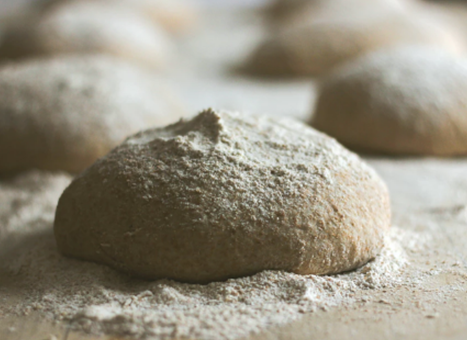
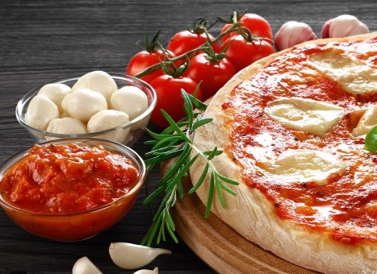

PIZZA AL ESTILO CHICAGO CON ESPINACAS Y CHAMPIÑONES
110 MIN / 6 A 8 PORCIONES
110 MIN / 6 A 8 PORCIONES






INGREDIENTES
Masa
20 gr de levadura seca instantánea 1 cucharadita de azúcar 500 ml agua tibia 100 ml aceite vegetal 4 cucharadas de aceite de oliva 65 gr harina de maíz fina (chuchoca) 2 cucharaditas de sal 625 gr harina Salsa 5 cucharadas de aceite de oliva ½ cebolla picada en cubos finos 2 cucharaditas de sal 3 cucharadas de Orégano Gourmet 1 ½ cucharadas de Albahaca Gourmet 2 tarro de tomates en cubos al natural 2 cucharaditas de azúcar Relleno ½ cebolla, en cubos 500 gr hojas de espinacas picadas 400 gr de champiñones, laminados 300 gr de queso mozarella. 4 cucharadas queso parmesano
PREPARACIÓN
Para la masa, disolver la levadura y el azúcar en agua tibia en un bol grande. Dejar reposar 2 minutos. Agregar el aceite, la harina de maíz, sal y 400gr de harina. Mezclar bien. Amasar y agregar el resto de harina, la cantidad necesaria para tener una masa blanda. Poner en el mesón y amasar por 5 minutos o hasta tener una masa lisa y elástica (agregar harina en el mesón a medida que se va amasando para que la masa no se pegue) . Poner la masa en un bol aceitado, tapar con un paño de cocina limpio y dejar reposar hasta que la masa duplique su volumen (leudar). Golpear la masa para que baje y luego dejar leudar por 40 minutos adicionales. 2. Mientras tanto preparar la salsa: Calentar 4 cucharadas de aceite en una olla a fuego medio. Agregar la cebolla, Orégano Gourmet, Albahaca Gourmet, sal y cocinar hasta que la cebolla esté dorada. Agregar el ajo y cocinar por 30 segundos. Agregar los tomates junto al jugo del tarro, a la mezcla de cebolla. Agregar el azúcar y cocinar hasta que la mezcla se haya reducido y espesado, como 30 minutos. Sazonar con sal y pimienta a gusto. Reservar. 3. Relleno: Cocinar las chalotas en el aceite de oliva hasta que estén transparentes. Agregar los champiñones y las espinacas, cocinar hasta que estén cocidos y se haya evaporado todo el líquido que hayan votado los vegetales. Reservar. 4. Calentar el horno a 220C. 5. Una vez que la masa haya reposado, dividirla en dos bolas. Estirar cada masa para cubrir dos moldes (desmontables) de 26 cm, hacer un borde de 5 cm con la masa. Dividir el relleno entre las dos pizza, tapar con el queso mozarella, luego terminar con la salsa de tomates y finalmente espolvorear el queso rallado. 6. Hornear por 35 a 40 minutos o hasta que el relleno esté caliente y la base esté esponjosa y dorada. Esperar unos minutos antes de desmoldar.